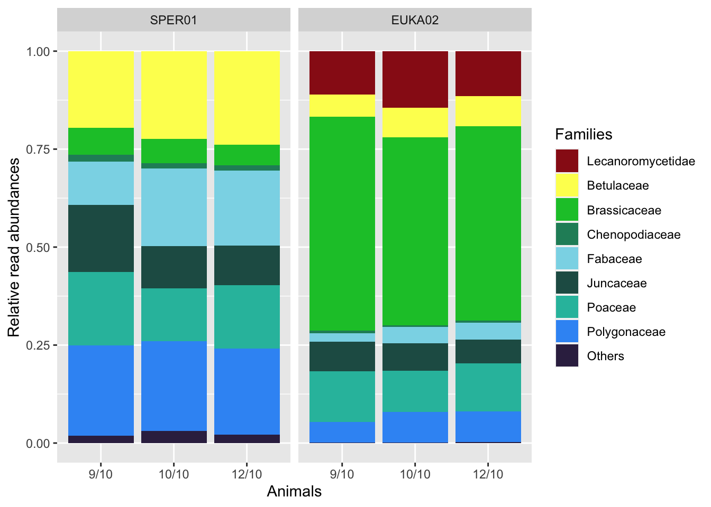
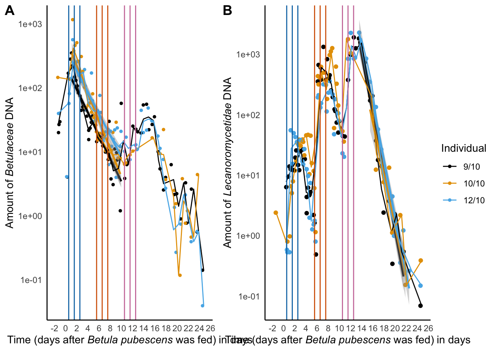

packages <- c(
"tidyverse", "devtools", "vegan",
"ggpubr", "colorspace", "R.utils", "ggthemes",
"ggforce"
)
install.packages(
setdiff(
packages,
rownames(installed.packages())
),
dependencies = TRUE
)DNA metabarcoding diet analysis in reindeer is quantitative and integrates feeding over several weeks
Stefaniya Kamenova ![]()
Eric Coissac
Abstract
Filtering of the EUKA02 DNA metabarcoding raw data.
Setting up the R environment
Install missing packages
Loads the used R packages
ROBIToolspackage is used to read result files produced by OBITools.ROBITaxonomypackage provides function allowing to query OBITools formated taxonomy.
if (!"ROBITools" %in% rownames(installed.packages())) {
# ROBITools are not available on CRAN and have to be installed
# from http://git.metabarcoding.org using devtools
metabarcoding_git <- "https://git.metabarcoding.org/obitools"
devtools::install_git(paste(metabarcoding_git,
"ROBIUtils.git",
sep = "/"
))
devtools::install_git(paste(metabarcoding_git,
"ROBITaxonomy.git",
sep = "/"
))
devtools::install_git(paste(metabarcoding_git,
"ROBITools.git",
sep = "/"
))
}
library(ROBITools)
library(ROBITaxonomy)tidyverse(Wickham et al., 2019) provides various methods for efficient data manipulation and plotting viaggplot2(Wickham, 2016)
library(tidyverse)veganis loaded for itsdecostandfunction (Oksanen et al., 2015)
library(vegan)ggthemesis loaded for itstheme_tuftefunction
library(ggthemes)ggpubris loaded for itsggarrangefunction (Kassambara and Kassambara, 2020)
library(ggpubr)library(colorspace)library(R.utils)library(magrittr)Initialising some global data
The blind color compliant color pallet for plant families.
family_color <- c(
"#991919", "#fcff5d",
"#0ec434", "#228c68", "#8ad8e8", "#235b54", "#29bdab",
"#3998f5", "#37294f", "#277da7", "#3750db", "#f22020",
"#ffc413", "#f47a22", "#2f2aa0", "#b732cc", "#772b9d",
"#5d4c86"
)
# The palette with grey:
cbPalette <- c("#999999", "#E69F00", "#56B4E9",
"#009E73", "#F0E442", "#0072B2",
"#D55E00", "#CC79A7")
# The palette with black:
cbbPalette <- c("#000000", "#E69F00", "#56B4E9",
"#009E73", "#F0E442", "#0072B2",
"#D55E00", "#CC79A7")Reading the data
Reading of the NCBI taxonomy
taxo = read.taxonomy("Data/ncbi20210212")Reading of the metabarcoding data
For the EUKA02 data set
- The Read contingency table
reads <- read_csv("Data/Faeces/FE.Eukaryota.samples.reads.csv",
show_col_types = FALSE
) %>%
column_to_rownames("id") %>%
as.matrix() %>%
decostand(method = "total")- The sample description table
samples <- read_csv("Data/Faeces/FE.Eukaryota.samples.samples.csv",
show_col_types = FALSE
) %>%
mutate(.id = sample_id) %>%
column_to_rownames(".id") %>%
mutate(
Animal_id = factor(Animal_id,
levels = c("9/10", "10/10", "12/10")
),
Fed_biomass = factor(Fed_biomass,
levels = c("20", "500", "2000")
)
)- The MOTU description table
motus <- read_csv("Data/Faeces/FE.Eukaryota.samples.motus.csv",
show_col_types = FALSE
) %>%
mutate(.id = id) %>%
column_to_rownames(".id")- Create a
metabarcoding.dataobject, where you merge the three tables
Euka02 <- metabarcoding.data(
reads = reads,
samples = samples,
motus = motus
)And sorts the table from the most to the less abundante MOTU.
motus.hist <- colMeans(reads(Euka02))
Euka02@motus$mean_ref_freq <- motus.hist
Euka02 <- Euka02[, order(motus.hist, decreasing = TRUE)]For the SPER01 data set
- The Read contingency table
reads <- read_csv("Data/Faeces/FE.Spermatophyta.samples.reads.csv",
show_col_types = FALSE
) %>%
column_to_rownames("id") %>%
as.matrix() %>%
decostand(method = "total")- The sample description table
samples <- read_csv("Data/Faeces/FE.Spermatophyta.samples.samples.csv",
show_col_types = FALSE
) %>%
mutate(.id = sample_id) %>%
column_to_rownames(".id") %>%
mutate(
Animal_id = factor(Animal_id,
levels = c("9/10", "10/10", "12/10")
),
Fed_biomass = factor(Fed_biomass,
levels = c("20", "500", "2000")
)
)- The MOTU description table
motus <- read_csv("Data/Faeces/FE.Spermatophyta.samples.motus.csv",
show_col_types = FALSE
) %>%
mutate(.id = id) %>%
column_to_rownames(".id")- Create a
metabarcoding.dataobject, where you merge the three tables
Sper01 <- metabarcoding.data(
reads = reads,
samples = samples,
motus = motus
)And sorts the table from the most to the less abundante MOTU.
motus.hist <- colMeans(reads(Sper01))
Sper01@motus$mean_ref_freq <- motus.hist
Sper01 <- Sper01[, order(motus.hist, decreasing = TRUE)]An overview of the diet
MOTUs are aggregated at family level.
Sper01_family <- aggregate(Sper01, by = list(family = Sper01@motus$family_name), MARGIN = 2, FUN = sum)
Euka02@motus %<>%
mutate(family_name = ifelse(category == "Lichen",
"Lecanoromycetidae",
family_name
))
Euka02_family <- aggregate(Euka02,
by = list(family = Euka02@motus$family_name),
MARGIN = 2,
FUN = sum
)Sper01_family@reads %>%
as.data.frame() %>%
rownames_to_column("sample_id") %>%
left_join(Sper01_family@samples,
by = join_by(sample_id)
) %>%
group_by(Animal_id) %>%
summarise(across(
where(is.numeric),
~ mean(.x, na.rm = TRUE)
)) %>%
select(Animal_id, ends_with("aceae")) %>%
pivot_longer(-Animal_id,
names_to = "Family",
values_to = "RRA"
) -> diet_sper01
Euka02_family@reads %>%
decostand(method = "total") %>%
as.data.frame() %>%
rownames_to_column("sample_id") %>%
left_join(Euka02_family@samples,
by = join_by(sample_id)
) %>%
group_by(Animal_id) %>%
summarise(across(
where(is.numeric),
~ mean(.x, na.rm = TRUE)
)) %>%
select(Animal_id, ends_with("ae")) %>%
pivot_longer(-Animal_id,
names_to = "Family",
values_to = "RRA"
) -> diet_euka02
diet_sper01 %>%
mutate(Marker = "SPER01") %>%
bind_rows(diet_euka02 %>%
mutate(Marker = "EUKA02")) %>%
mutate(Marker = factor(Marker,
levels = c("SPER01", "EUKA02")
)) %>%
group_by(Family) %>%
mutate(
merge = mean(RRA) < 0.01,
Family = ifelse(merge, "Others", Family)
) %>%
group_by(Family, Marker, Animal_id) %>%
summarise(RRA = sum(RRA), .groups = "drop") -> diet_data
Families <- diet_data$Family %>%
unique() %>%
setdiff(c(
"Lecanoromycetidae",
"Betulaceae",
"Others"
)) %>%
c(
"Lecanoromycetidae",
"Betulaceae",
.,
"Others"
)
diet_data %>%
mutate(Family = factor(Family, levels = Families)) %>%
ggplot(aes(x = Animal_id, y = RRA, fill = Family)) +
geom_col() +
facet_wrap(. ~ Marker) +
xlab("Animals") +
ylab("Relative read abundances") +
scale_fill_manual(
name = "Families",
values = family_color
) +
theme(
axis.title.x = ggtext::element_markdown(),
axis.title.y = ggtext::element_markdown()
) -> comparative_diet_plot
ggsave("Figures/comparative_diet.pdf",
comparative_diet_plot,
dpi = 300,
width = 20, height = 10, units = c("cm")
)
ggsave("Figures/comparative_diet.tiff",
comparative_diet_plot,
dpi = 300,
width = 20, height = 10, units = c("cm")
)
comparative_diet_plot
Families representing less than one percent of the average diet with both markers are collapsed into the ‘Others’ category. Lecanoromycetidae is actually a sub-class and corresponds to the MOTUs representing the lichens in the EUKA02 diet data.
diet_data %>%
pivot_wider(names_from = c("Animal_id","Marker"),values_from = "RRA") %>%
mutate(Family = factor(Family,levels = Families)) %>%
arrange(Family) %>%
mutate_if(is.numeric,~ round(.,3))Analysis of the diet
Evolution of the Food items accross time
For the Euka02 marker
Euka02_family@reads %>%
as.data.frame() %>%
rownames_to_column("sample_id") %>%
pivot_longer(cols = - "sample_id", names_to = "Family",values_to = "RRA") %>%
mutate(Family = factor(Family,levels=Families)) %>%
left_join(Euka02@samples, by = "sample_id") %>%
mutate(times_from_birch = times_from_birch/24) %>%
filter(! is.na(Family)) %>%
filter(! is.na(RRA)) %>%
filter(times_from_birch >=-2 & times_from_birch <= 25 ) %>%
ggplot(aes(x=times_from_birch,y=RRA, col = Animal_id)) +
geom_point(size=0.5) +
xlim(-2,25) +
facet_wrap(. ~ Family, ncol=2,scales="free_y") +
geom_vline (xintercept = 0.54, colour = "lightgrey") +
geom_vline (xintercept = 1.54, colour = "lightgrey") +
geom_vline (xintercept = 2.54, colour = "lightgrey") +
geom_vline (xintercept = 5.54, colour = "lightgrey") +
geom_vline (xintercept = 6.54, colour = "lightgrey") +
geom_vline (xintercept = 7.54, colour = "lightgrey") +
geom_vline (xintercept = 10.54, colour = "lightgrey") +
geom_vline (xintercept = 11.54, colour = "lightgrey") +
geom_vline (xintercept = 12.54, colour = "lightgrey") +
annotate("text", x = 1.60, y = 1, label = "20g",size = 3) +
annotate("text", x = 6.60, y = 1, label = "500g",size = 3) +
annotate("text", x = 11.60, y = 1, label = "2000g",size = 3) +
ylab("Relative reads abundance") +
xlab("Time (days after *Betula pubescens* was fed)") +
theme_bw() +
theme(axis.title.x = ggtext::element_markdown(),
legend.position="bottom") +
scale_color_manual(name="Animal",values = family_color) -> euka02_family_plot
ggsave("Figures/Euka02_family_plot.pdf",
euka02_family_plot,
dpi = 300,
width = 32, height = 35, units = c("cm"))
ggsave("Figures/Euka02_family_plot.tiff",
euka02_family_plot,
dpi = 300,
width = 16, height = 17, units = c("cm"))
euka02_family_plotFor the Sper01 marker
Sper01_family@reads %>%
as.data.frame() %>%
rownames_to_column("sample_id") %>%
pivot_longer(cols = - "sample_id", names_to = "Family",values_to = "RRA") %>%
mutate(Family = factor(Family,levels=Families)) %>%
left_join(Sper01@samples, by = "sample_id") %>%
mutate(times_from_birch = times_from_birch/24) %>%
filter(! is.na(Family)) %>%
filter(! is.na(RRA)) %>%
filter(times_from_birch >=-2 & times_from_birch <= 25 ) %>%
ggplot(aes(x=times_from_birch,y=RRA, col = Animal_id)) +
geom_point(size=0.5) +
xlim(-2,25) +
facet_wrap(. ~ Family, ncol=2,scales="free_y") +
geom_vline (xintercept = 0.54, colour = "lightgrey") +
geom_vline (xintercept = 1.54, colour = "lightgrey") +
geom_vline (xintercept = 2.54, colour = "lightgrey") +
geom_vline (xintercept = 5.54, colour = "lightgrey") +
geom_vline (xintercept = 6.54, colour = "lightgrey") +
geom_vline (xintercept = 7.54, colour = "lightgrey") +
geom_vline (xintercept = 10.54, colour = "lightgrey") +
geom_vline (xintercept = 11.54, colour = "lightgrey") +
geom_vline (xintercept = 12.54, colour = "lightgrey") +
annotate("text", x = 1.60, y = 1, label = "20g",size = 3) +
annotate("text", x = 6.60, y = 1, label = "500g",size = 3) +
annotate("text", x = 11.60, y = 1, label = "2000g",size = 3) +
ylab("Relative reads abundance") +
xlab("Time (days after *Betula pubescens* was fed)") +
theme_bw() +
theme(axis.title.x = ggtext::element_markdown(),
legend.position="bottom") +
scale_color_manual(name="Animal",values = family_color) -> sper01_family_plot
ggsave("Figures/Sper01_family_plot.pdf",
sper01_family_plot,
dpi = 300,
width = 32, height = 35, units = c("cm"))
ggsave("Figures/Sper01_family_plot.tiff",
sper01_family_plot,
dpi = 300,
width = 16, height = 17, units = c("cm"))
sper01_family_plotNormalisation of the Diet by a constant item
In the relative read frequency approach, the sum of all elements is, by definition, equal to one. This means that one degree of freedom is lost. Thus, if one item increases (birch or lichen in our experience), other items are forced to decrease because of the lost degree of freedom. Throughout the experiment, pellets were provided in a constant amount and therefore must be constantly retrieved in the feces. To recover the degree of freedom, the relative frequencies of the food items are divided by the pellet components. The new amount of food is therefore expressed in an arbitrary unit of DNA, and the amounts don’t add up to one in every sample.
Normalizing the Euka02 data set
Euka02_family@motus %<>%
mutate(food = ifelse(family_name =="Betulaceae","Birch",
ifelse(family_name =="Lecanoromycetidae","Lichen","Pellet")))
Euka02_food <- aggregate(Euka02_family,MARGIN = "motus",
by=list(Food=Euka02_family@motus$food),
FUN = sum)
Euka02_food$dna_amount <- sweep(Euka02_food@reads,
MARGIN = 1,
STATS = Euka02_food@reads[,"Pellet"],
FUN = "/"
)Normalizing the Sper01 data set
Sper01_family@motus %<>%
mutate(food = ifelse(family_name =="Betulaceae","Birch",
ifelse(family_name =="Lecanoromycetidae","Lichen","Pellet")))
Sper01_food <- aggregate(Sper01_family,MARGIN = "motus",
by=list(Food=Sper01_family@motus$food),
FUN = sum)
Sper01_food$dna_amount <- sweep(Sper01_food@reads,
MARGIN = 1,
STATS = Sper01_food@reads[,"Pellet"],
FUN = "/"
)Euka02_food$dna_amount %>%
as.data.frame() %>%
rownames_to_column("sample_id") %>%
pivot_longer(cols = - "sample_id", names_to = "Food",values_to = "amount") %>%
left_join(Euka02_food@samples, by = "sample_id") %>%
mutate(times_from_birch = times_from_birch/24,
time_group = floor(times_from_birch)) %>%
filter(Food=="Lichen") %>%
filter(amount > 0) %>%
filter(times_from_birch <= 26) -> lichen_data_Euka02
lichen_start_time=13
lichen_end_time=24
ggplot(data = lichen_data_Euka02,
aes(x = times_from_birch,
y = amount,
color = Animal_id)) +
geom_point() +
geom_smooth(data = lichen_data_Euka02 %>%
filter(times_from_birch >= lichen_start_time &
times_from_birch <= lichen_end_time),
method = MASS::rlm,show.legend = FALSE,
formula = y~x) +
scale_color_manual(values=cbbPalette) +
stat_summary_bin(fun = median, geom = "line") +
scale_y_log10() +
geom_vline (xintercept = c(0.54,1.54,2.54), colour = cbbPalette[6]) +
geom_vline (xintercept = c(5.54,6.54,7.54), colour = cbbPalette[7]) +
geom_vline (xintercept = c(10.54,11.54,12.54), colour = cbbPalette[8]) +
scale_x_continuous(breaks = scales::pretty_breaks(n = 15),limits = c(-2,25)) +
guides(color=guide_legend(title="Individual")) +
theme_minimal() +
theme(panel.grid.major = element_blank(),
panel.grid.minor = element_blank(),
panel.background = element_blank(),
axis.title.x = ggtext::element_markdown(),
axis.title.y = ggtext::element_markdown(),
axis.line = element_line(colour = "black")) +
ylab("Amount of *Lecanoromycetidae* DNA") +
xlab('Time (days after *Betula pubescens* was fed) in days') -> decay_leuca_euka02
decay_leuca_euka02Euka02_food$dna_amount %>%
as.data.frame() %>%
rownames_to_column("sample_id") %>%
pivot_longer(cols = - "sample_id", names_to = "Food",values_to = "amount") %>%
left_join(Euka02_food@samples, by = "sample_id") %>%
mutate(times_from_birch = times_from_birch/24,
time_group = floor(times_from_birch)) %>%
filter(Food=="Birch") %>%
filter(amount > 0) %>%
filter(times_from_birch <= 25) -> birch_data_Euka02
birch_start_time=1
birch_end_time=10
ggplot(data = birch_data_Euka02,
aes(x = times_from_birch,
y = amount,
color = Animal_id)) +
geom_point(size=1) +
geom_smooth(data = birch_data_Euka02 %>%
filter(times_from_birch >= birch_start_time &
times_from_birch <= birch_end_time),
method = MASS::rlm,
show.legend = FALSE,
formula = y~x) +
scale_color_manual(values=cbbPalette) +
stat_summary_bin(fun = median, geom = "line") +
scale_y_log10() +
geom_vline (xintercept = c(0.54,1.54,2.54), colour = cbbPalette[6]) +
geom_vline (xintercept = c(5.54,6.54,7.54), colour = cbbPalette[7]) +
geom_vline (xintercept = c(10.54,11.54,12.54), colour = cbbPalette[8]) +
scale_x_continuous(breaks = scales::pretty_breaks(n = 15),
limits = c(-2,25)) +
guides(color=guide_legend(title="Individual")) +
theme_minimal() +
theme(panel.grid.major = element_blank(),
panel.grid.minor = element_blank(),
panel.background = element_blank(),
axis.title.x = ggtext::element_markdown(),
axis.title.y = ggtext::element_markdown(),
axis.line = element_line(colour = "black")) +
ylab("Amount of *Betulaceae* DNA") +
xlab('Time (days after *Betula pubescens* was fed) in days') -> decay_betula_euka02
decay_betula_euka02ggarrange(decay_betula_euka02,
decay_leuca_euka02,
common.legend = TRUE,
legend="right",labels = c("A","B")) -> decay_euka02_plot
ggsave("Figures/decay_euka02.pdf",
decay_euka02_plot,
dpi=300,
width=12,height=5)
ggsave("Figures/decay_euka02.tiff",
decay_euka02_plot,
dpi=300,
width=12,height=5)
decay_euka02_plot
Estimate of the Half-time detection
lichen_data_Euka02 %>%
filter(times_from_birch >= lichen_start_time &
times_from_birch <= lichen_end_time) %>%
MASS::rlm(times_from_birch ~ log(amount):Animal_id + Animal_id,
data = .
) %>%
summary() %>%
.[["coefficients"]] %>%
as.data.frame() %>%
rownames_to_column("Effect") %>%
filter(str_starts(Effect, "log")) %>%
mutate(Animal = str_replace(Effect, "^.*Animal_id", "")) %>%
bind_rows(
lichen_data_Euka02 %>%
filter(times_from_birch >= lichen_start_time &
times_from_birch <= lichen_end_time) %>%
MASS::rlm(times_from_birch ~ log(amount) + Animal_id, data = .) %>%
summary() %>% .[["coefficients"]] %>%
as.data.frame() %>%
rownames_to_column("Effect") %>%
filter(Effect == "log(amount)") %>%
mutate(Animal = "All")
) %>%
mutate(
HalfTime = -Value * log(2) * 24,
HalfTime_sd = `Std. Error` * log(2) * 24,
HalfTime_ci_low = qnorm(0.025, mean = HalfTime, sd = HalfTime_sd),
HalfTime_ci_high = qnorm(0.975, mean = HalfTime, sd = HalfTime_sd)
) %>%
select(Animal, HalfTime, HalfTime_ci_low, HalfTime_ci_high, HalfTime_sd)birch_data_Euka02 %>%
filter(times_from_birch >= birch_start_time &
times_from_birch <= birch_end_time) %>%
MASS::rlm(times_from_birch ~ log(amount):Animal_id + Animal_id,
data = .
) %>%
summary() %>%
.[["coefficients"]] %>%
as.data.frame() %>%
rownames_to_column("Effect") %>%
filter(str_starts(Effect, "log")) %>%
mutate(Animal = str_replace(Effect, "^.*Animal_id", "")) %>%
bind_rows(
birch_data_Euka02 %>%
filter(times_from_birch >= birch_start_time &
times_from_birch <= birch_end_time) %>%
MASS::rlm(times_from_birch ~ log(amount) + Animal_id, data = .) %>%
summary() %>% .[["coefficients"]] %>%
as.data.frame() %>%
rownames_to_column("Effect") %>%
filter(Effect == "log(amount)") %>%
mutate(Animal = "All")
) %>%
mutate(
HalfTime = -Value * log(2) * 24,
HalfTime_sd = `Std. Error` * log(2) * 24,
HalfTime_ci_low = qnorm(0.025, mean = HalfTime, sd = HalfTime_sd),
HalfTime_ci_high = qnorm(0.975, mean = HalfTime, sd = HalfTime_sd)
) %>%
select(Animal, HalfTime, HalfTime_ci_low, HalfTime_ci_high, HalfTime_sd)Sper01_food$dna_amount %>%
as.data.frame() %>%
rownames_to_column("sample_id") %>%
pivot_longer(cols = - "sample_id", names_to = "Food",values_to = "amount") %>%
left_join(Sper01_food@samples, by = "sample_id") %>%
mutate(times_from_birch = times_from_birch/24,
time_group = floor(times_from_birch)) %>%
filter(Food=="Birch") %>%
filter(amount > 0) %>%
filter(times_from_birch <= 25) -> birch_data_Sper01
birch_start_time=1
birch_end_time=10
ggplot(data = birch_data_Sper01,
aes(x = times_from_birch,
y = amount,
color = Animal_id)) +
geom_point(size=1) +
geom_smooth(data = birch_data_Sper01 %>%
filter(times_from_birch >= birch_start_time &
times_from_birch <= birch_end_time),
method = MASS::rlm,
show.legend = FALSE,
formula = y~x) +
scale_color_manual(values=cbbPalette) +
stat_summary_bin(fun = median, geom = "line") +
scale_y_log10() +
geom_vline (xintercept = c(0.54,1.54,2.54), colour = cbbPalette[6]) +
geom_vline (xintercept = c(5.54,6.54,7.54), colour = cbbPalette[7]) +
geom_vline (xintercept = c(10.54,11.54,12.54), colour = cbbPalette[8]) +
scale_x_continuous(breaks = scales::pretty_breaks(n = 15),
limits = c(-2,25)) +
guides(color=guide_legend(title="Individual")) +
theme_minimal() +
theme(panel.grid.major = element_blank(),
panel.grid.minor = element_blank(),
panel.background = element_blank(),
axis.title.x = ggtext::element_markdown(),
axis.title.y = ggtext::element_markdown(),
axis.line = element_line(colour = "black")) +
ylab("Amount of *Betulaceae* DNA") +
xlab('Time (days after *Betula pubescens* was fed) in days') -> decay_betula_sper01
decay_betula_sper01ggarrange(decay_betula_euka02,
decay_betula_sper01,
common.legend = TRUE,
legend="right",labels = c("A","B")) -> decay_betula_plot
ggsave("Figures/decay_betula.pdf",
decay_betula_plot,
dpi=300,
width=12,height=5)
ggsave("Figures/decay_betula.tiff",
decay_betula_plot,
dpi=300,
width=12,height=5)
decay_betula_plotbirch_data_Sper01 %>%
filter(times_from_birch >= birch_start_time &
times_from_birch <= birch_end_time) %>%
MASS::rlm(times_from_birch ~ log(amount):Animal_id + Animal_id,
data = .
) %>%
summary() %>%
.[["coefficients"]] %>%
as.data.frame() %>%
rownames_to_column("Effect") %>%
filter(str_starts(Effect, "log")) %>%
mutate(Animal = str_replace(Effect, "^.*Animal_id", "")) %>%
bind_rows(
birch_data_Sper01 %>%
filter(times_from_birch >= birch_start_time &
times_from_birch <= birch_end_time) %>%
MASS::rlm(times_from_birch ~ log(amount) + Animal_id, data = .) %>%
summary() %>% .[["coefficients"]] %>%
as.data.frame() %>%
rownames_to_column("Effect") %>%
filter(Effect == "log(amount)") %>%
mutate(Animal = "All")
) %>%
mutate(
HalfTime = -Value * log(2) * 24,
HalfTime_sd = `Std. Error` * log(2) * 24,
HalfTime_ci_low = qnorm(0.025, mean = HalfTime, sd = HalfTime_sd),
HalfTime_ci_high = qnorm(0.975, mean = HalfTime, sd = HalfTime_sd)
) %>%
select(Animal, HalfTime, HalfTime_ci_low, HalfTime_ci_high, HalfTime_sd)Euka02_food$dna_amount %>%
as.data.frame() %>%
rownames_to_column("sample_id") %>%
pivot_longer(cols = -sample_id,names_to = "Food", values_to = "amount") %>%
left_join(Euka02_food@samples, by = "sample_id") %>%
filter(!is.na(Fed_biomass)) %>%
group_by(Animal_id,Fed_biomass,Food) %>%
mutate(amount = slider::slide_mean(amount,after = 2,before = 2)) %>%
summarise(amount = max(amount,na.rm = TRUE),.groups = "drop") %>%
filter(Food == "Lichen") %>%
mutate(Fed_biomass = as.integer(as.character(Fed_biomass))) %>%
ggplot(aes(x=Fed_biomass,y=amount)) +
geom_point(aes(col=Animal_id)) +
stat_smooth(method = lm,formula = 'y ~ x')+
theme_classic() +
guides(color=guide_legend(title="Individual")) +
scale_color_manual(values=cbbPalette) +
labs(y="Amount of Lecanoromycetidae DNA") +
labs(x=expression('Biomass of ingested lichen (g)'),
fill="Var1")Euka02_food$dna_amount %>%
as.data.frame() %>%
rownames_to_column("sample_id") %>%
pivot_longer(cols = -sample_id,names_to = "Food", values_to = "amount") %>%
left_join(Euka02_food@samples, by = "sample_id") %>%
filter(!is.na(Fed_biomass)) %>%
group_by(Animal_id,Fed_biomass,Food) %>%
summarise(amount = max(amount,na.rm = TRUE),.groups = "drop") %>%
filter(Food == "Lichen") %>%
mutate(Fed_biomass = as.integer(as.character(Fed_biomass))) %>%
lm(amount ~ Fed_biomass:Animal_id + 1, data=.) -> dna_rra_lm
summary(dna_rra_lm)
Call:
lm(formula = amount ~ Fed_biomass:Animal_id + 1, data = .)
Residuals:
1 2 3 4 5 6 7 8
0.03048 0.26044 -0.06541 -0.16119 0.58525 -0.14470 -0.15696 -0.46597
9
0.11806
Coefficients:
Estimate Std. Error t value Pr(>|t|)
(Intercept) 0.1878469 0.1783062 1.054 0.34033
Fed_biomass:Animal_id9/10 0.0008862 0.0002121 4.179 0.00866 **
Fed_biomass:Animal_id10/10 0.0010101 0.0002121 4.763 0.00504 **
Fed_biomass:Animal_id12/10 0.0011459 0.0002121 5.403 0.00293 **
---
Signif. codes: 0 '***' 0.001 '**' 0.01 '*' 0.05 '.' 0.1 ' ' 1
Residual standard error: 0.379 on 5 degrees of freedom
Multiple R-squared: 0.9035, Adjusted R-squared: 0.8456
F-statistic: 15.61 on 3 and 5 DF, p-value: 0.005683 shapiro.test(residuals(dna_rra_lm))
Shapiro-Wilk normality test
data: residuals(dna_rra_lm)
W = 0.95163, p-value = 0.708References
Kassambara, A., Kassambara, M.A., 2020. Package “ggpubr.”
Oksanen, J., Blanchet, F.G., Kindt, R., Legendre, P., Minchin, P., O’Hara, R., Simpson, G., Solymos, P., Henry, M., Stevens, M., others, 2015. Vegan: Community ecology package. Ordination methods, diversity analysis and other functions for community and vegetation ecologists. R package ver 2–3.
Wickham, H., 2016. ggplot2: Elegant Graphics for Data Analysis. Springer-Verlag New York.
Wickham, H., Averick, M., Bryan, J., Chang, W., McGowan, L., François, R., Grolemund, G., Hayes, A., Henry, L., Hester, J., Kuhn, M., Pedersen, T., Miller, E., Bache, S., Müller, K., Ooms, J., Robinson, D., Seidel, D., Spinu, V., Takahashi, K., Vaughan, D., Wilke, C., Woo, K., Yutani, H., 2019. Welcome to the tidyverse. Journal of open source software 4, 1686. https://doi.org/10.21105/joss.01686